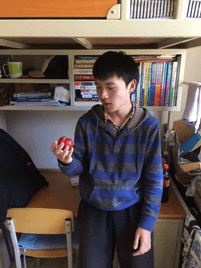

咳咳，大家大饱眼福的时候到了，下面，小编将真情献上帅哥美女的靓照（其实主要是让大家了解下该穿的衣服。。。）
春秋季可穿的衣服很多啦，帽衫啦，夹克啦，风衣啦，穿短袖也不会感到很冷的， 裤子穿针织裤，牛仔裤。。。
夏季男生的配置就比较简单了，大家基本都是短袖，女生呢，尽可能展示你的风采吧，一到夏天，在软院还是能看到许多女生穿裙子滴。

冬天，一定要穿的厚一点，最好衣服上带有帽子，鞋也一定要厚一点，上课的教室还有寝室暖气不是很给力，要提前做好心里准备呀。
至于学院衣柜的大小嘛，够藏两个隔壁老王了。
（上面的帅哥美女可是软院的学长学姐哦，来软院后小伙伴们一起来寻找一下吧!）
（照片来源网上，我们默认可以传播，如果侵犯个人肖像，请及时联系我们，我们将致歉并删除）